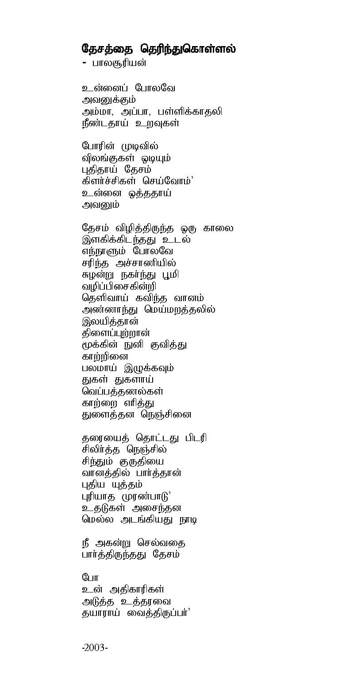
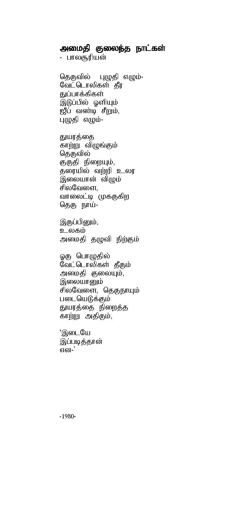

lines
← Back to the May 2004 cover
Interventions · May 2004
When Our Peace Is Shattered (Tamil)
Balasooriyan


Previous
When Our Peace Is Shattered, and Other Poems
Next
The Experiences of Tamil Women: Nationalism, Construction of Gender, and Women’s Political Agency (Part II)